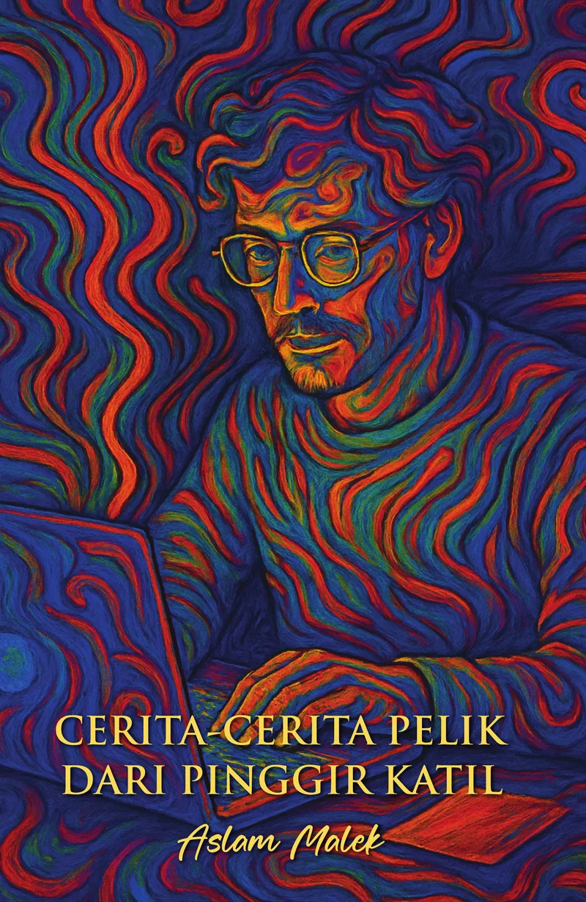
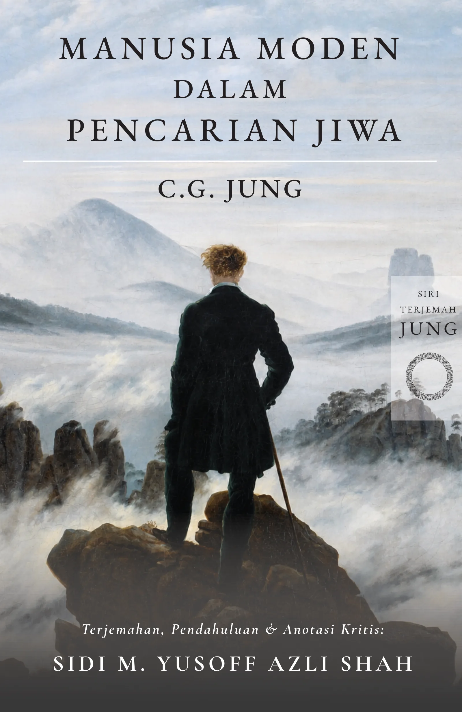
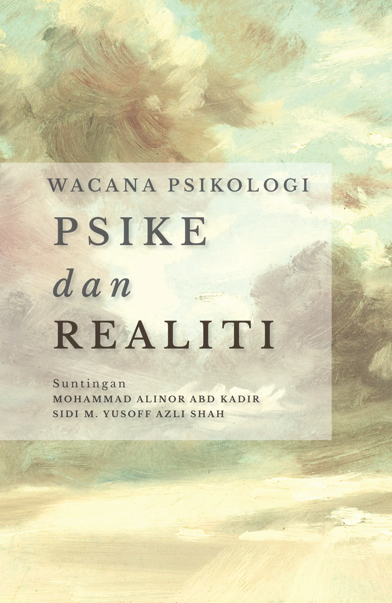

Penyuntingan · Reka letak
aslam.wordsmith
Perkataan yang ditimbang,
halaman yang dibentuk.
Khidmat penyuntingan dan reka letak untuk penulis serta penerbit yang mahukan naskhah mereka dibaca dengan teliti – dan diterbitkan dengan rupa yang kemas.
Seorang penulis.
Seorang penyunting.
Saya Aslam – penulis, editor, dan pereka letak buku, serta orang di sebalik sebuah penerbitan. Sejak bertahun-tahun, kerja saya berkisar pada satu perkara yang sama: membantu sesebuah naskhah mencapai bentuk terbaiknya, daripada struktur cerita hinggalah ke baris terakhir pada halaman.
Pendekatan saya teliti dan tidak tergesa-gesa. Saya membaca dengan dekat, menyunting dengan menghormati suara penulis, dan menyusun atur setiap buku mengikut piawai cetakan yang kemas. Jika anda serius dengan karya anda, saya akan menyambutnya dengan keseriusan yang sama.
Karya.
Buku yang saya tulis – dan buku yang saya susun atur untuk penerbit lain.
Tulisan saya

Suntingan & reka letak


Khidmat & kadar.
Apa yang boleh saya bantu dengan naskhah anda, berserta kadar permulaannya.
Suntingan struktur (Developmental editing)
RM 6 / halamanMenilai bentuk keseluruhan naskhah – plot, watak, alur, dan suara – sebelum kita perhalus ayat demi ayat.
Suntingan bahasa & gaya (Copy editing)
RM 5 / halamanMemperkemas ayat, nada, ritma, dan konsistensi supaya prosa mengalir dengan lancar tanpa kehilangan suara anda.
Baca pruf (Proofreading)
RM 4 / halaman prufSaringan akhir untuk ejaan, tanda baca, dan ralat kecil sebelum naskhah dihantar ke percetakan.
Reka letak & tipografi (Typesetting & layout)
RM 5–6 / halamanMenyusun atur naskhah untuk cetakan: tipografi, margin, dan halaman yang kemas serta selesa dibaca.
Harga di atas ialah kadar permulaan. Kiraan per halaman dibuat berdasarkan format standard (12pt, langkau baris 2.0). Tempoh kerja biasa ialah 5–14 hari bekerja, manakala kerja segera tertakluk kepada caj tambahan. Sebut harga muktamad diberikan selepas permintaan dihantar.
Ada keperluan lain? Sebutkan dalam permintaan anda dan kita bincangkan.
Cara kerja.
Dari permintaan ke naskhah siap, dalam empat langkah.
-
Hantar permintaan
Isi borang ringkas tentang projek anda: jenis naskhah, panjang, dan tarikh yang anda harapkan.
-
Bincang skop
Kita berbincang untuk menetapkan keperluan sebenar dan jangkaan kedua-dua pihak.
-
Sebut harga
Anda menerima sebut harga dan jadual kerja yang jelas sebelum kerja dimulakan.
-
Mula kerja
Selepas anda sahkan, kerja bermula dan anda dimaklumkan pada setiap peringkat.
Sedia untuk mula?
Hantar permintaan anda dan saya akan balas dengan langkah seterusnya.
Hantar permintaan